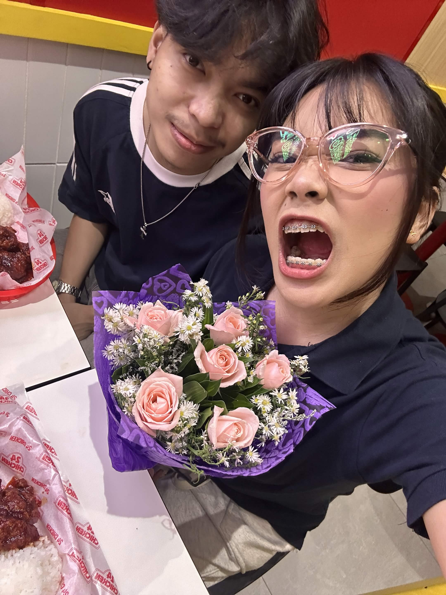
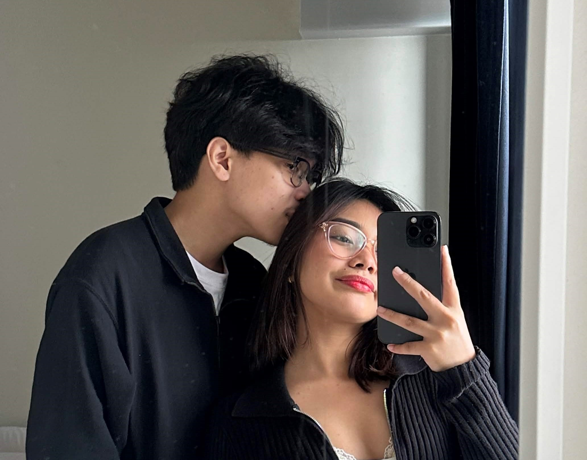
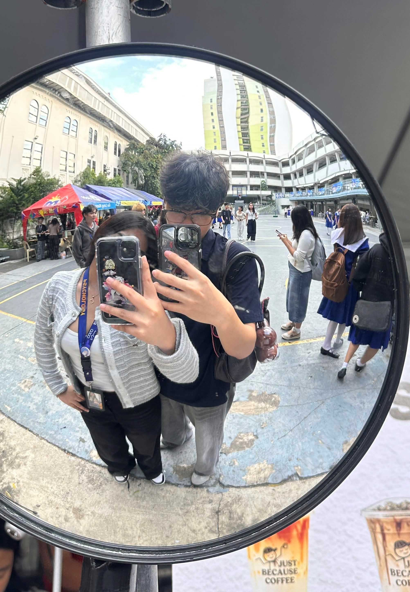
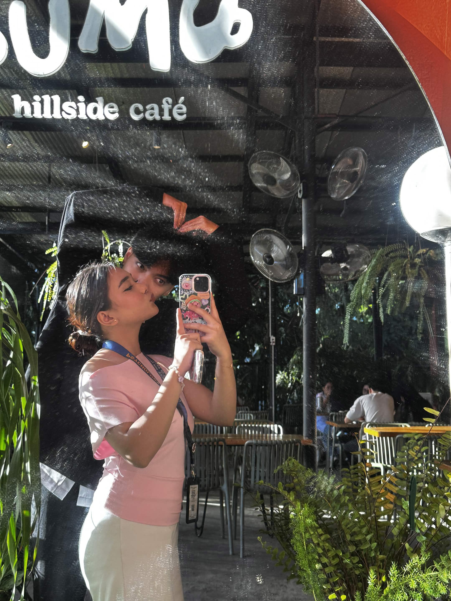

FOR LOVE
For love, with love.
A LITTLE CORNER OF THE INTERNET, EXCLUSIVELY FOR YOU, MY BEBE.
here i compiled all my favorite pictures of you and us, love notes, and a song.
"I'm sorry bebe,Mag bati na us"
Read Me 💌
A special message just for you
Loading...
Hover over to reveal the magic




Music
This song reminds me of you.
By Kiyozen.
Im sorry na my bebe
Loving you
I love you in ways that stretch beyond language, beyond time, beyond what can be easily explained. These words may seem simple, but they carry the depth of everything my heart has learned to hold. Loving you has never been loud or demanding. It has been steady, patient, and quietly certain. I'm doing all of this because i love you. Actually no, love is an understatement. It seemed overused, trivial, and simplistic while my emotions for you were extraordinary, complex, and expansive as the universe itself. That is how i feel about you.
I also want to make things right between us and ease the tension that happened. I'm genuinely sorry for the things i said and for the way i handled the situation. Looking back, i realize that i could have been more patient and understanding instead of letting my emotions get the better of me. I know all you needed from me was to wait, and i wish i had understood that better in the moment. The truth is, i was already making this website for you. I had been putting my feelings into something i wanted you to see, something that could express the things i sometimes struggle to say out loud. I was also hesitant to give you some of my other handcrafts because i felt embarrassed about them. I kept thinking that maybe they looked like nothing special, or that my efforts weren't good enough. But despite those doubts, every little thing i made was still made with you in mind. I never wanted my insecurities or the way i handled things to overshadow the love and thoughtfulness behind them. I'm sorry that it turned into something that hurt us instead of something that could have made you happy.
Sometimes, i wish you could see how much i was genuinely trying, even in the moments when it didn't seem enough. I know there were times when you expected more from me, and i understand that wanting more from someone you love isn't necessarily wrong. But i hope you also understand that i was doing my part in this relationship in the best way i knew how. Every time, i tried to give what i could, even when i didn't always know how to express it properly. It hurts a little knowing that despite all the effort i was putting in, there were still moments when it felt like i wasn't doing enough. Not because i didn't want to give you more, but because i was already giving you the best of what i had at that time. I wish you could see that my efforts were never meant to be the bare minimum. They were genuine, and they came from someone who truly wanted to make things work with you. And if there were things i lacked or ways i could have loved you better, i hope you know that it was never because i didn't care. I was still learning, still trying, and still choosing to show up for us in the ways i could.
No matter where life leads us, a part of me will always choose you — in growth, in distance, in the moments that require faith more than certainty, and if there ever comes a time when words fall short, know that my prayers will continue where my voice cannot. In every tomorrow, in every version of what comes next, my heart remember you with the same sincerity it holds today.